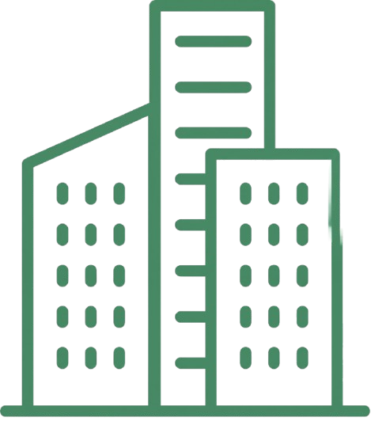

O QUE FAZEMOS?
Reunimos em um só lugar as informações da coleta de resíduos sólidos urbanos, para que moradores e equipes de limpeza trabalhem em sintonia.
Rotas, dias e horários
Mostramos de forma clara e interativa por onde os caminhões de limpeza passam em cada região, e em quais dias e horários.
Avisos para a população
Enviamos notificações para alertar os moradores antes da chegada das equipes, ajudando a melhorar o descarte.

Transparência para a cidade
Organizamos as informações para tornar a coleta de resíduos mais transparente e otimizada.